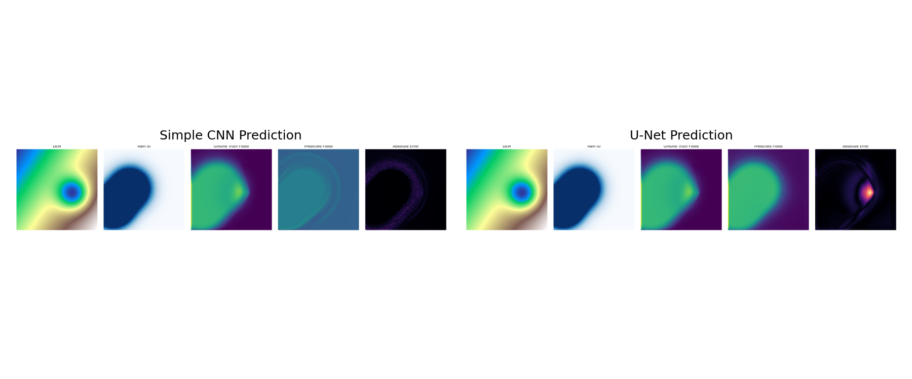

TwinMind-Disaster is a working prototype demonstrating how terrain elevation (DEM) + rainfall simulation + deep learning can generate AI-predicted flood depth maps.
The project explores the concept of an AI Digital Twin for disaster prediction, where terrain information and environmental simulation are combined with machine learning to estimate flood risk before sensors detect it.
Project Demo
https://gang0-jpg.github.io/TwinMind-Disaster/
GitHub Repository
https://github.com/gang0-jpg/TwinMind-Disaster
TwinMind-Disaster implements the following pipeline:
Terrain elevation (DEM)
↓
Rainfall simulation
↓
Deep learning flood prediction (U-Net)
↓
Flood risk visualization
The model learns the relationship between terrain shape and rainfall patterns to predict flood depth maps.
The trained model produces terrain-aware flood prediction maps.


Each prediction visualization shows:
These results demonstrate that TwinMind-Disaster is a working terrain-aware flood prediction pipeline.
The trained U-Net model predicts flood depth across the terrain mosaic using DEM, slope, and rainfall inputs.


We compared a simple CNN baseline with a U-Net architecture.
The U-Net significantly improves spatial flood prediction accuracy and removes ring artifacts observed in the baseline model.
Validation loss improved by an order of magnitude using the U-Net architecture.

The prototype integrates terrain data, rainfall simulation, and deep learning.
Terrain data
↓
Terrain processing
↓
Deep learning model (U-Net)
↓
Flood depth prediction
↓
Digital twin visualization
This architecture demonstrates how terrain understanding can be integrated with AI to simulate disaster impact.
The prototype dashboard visualizes:
Run locally:
streamlit run ui/twinmind_dashboard.py
Terrain elevation data is processed from DEM.
Processing pipeline:
DEM XML
↓
NumPy grid conversion
↓
DEM mosaic
↓
Resize to 64×64
↓
Training dataset
Generated datasets:
data/dem_npy_grid/dem_for_training.npydata/dem_npy_grid/slope_for_training.npyModel architecture
Small U-Net
Input channels
Total input
DEM + Slope + Rain(6) = 8 channels DEM + Rain(6) = 7 channels
Output
Flood depth map
Training script
scripts/train_unet.py
Experiments are tracked using MLflow.
Run MLflow UI:
mlflow ui
Open in browser:
TwinMind-Disaster
├─ data
├─ scripts
├─ twinmind_disaster
├─ ui
├─ docs
├─ mlruns
├─ runs
├─ README.md
└─ requirements.txtClone repository:
git clone https://github.com/gang0-jpg/TwinMind-Disaster.git
cd TwinMind-DisasterInstall dependencies:
pip install -r requirements.txtMain dependencies:
Run training:
python scripts/train_unet.py --data_dir data/cases --epochs 10 --batch_size 4Training results are automatically logged in MLflow.
Terrain data is provided by:
Geospatial Information Authority of Japan
(GSI)
https://www.gsi.go.jp/kiban/
Dataset
Basic Map Information DEM
Note: DEM data is not included in this repository.
TwinMind aims to become a:
Reality Operating System for Earth
A platform where AI continuously learns from:
To:
MIT License
Copyright (c) 2024-2026 Zenji Oka
Zenji Oka
Creator of TwinMind
GitHub:
https://github.com/gang0-jpg
Predicting water, protecting life. 🌊